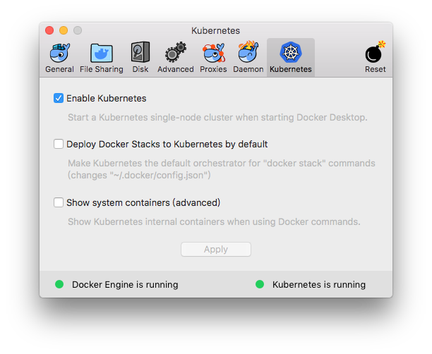
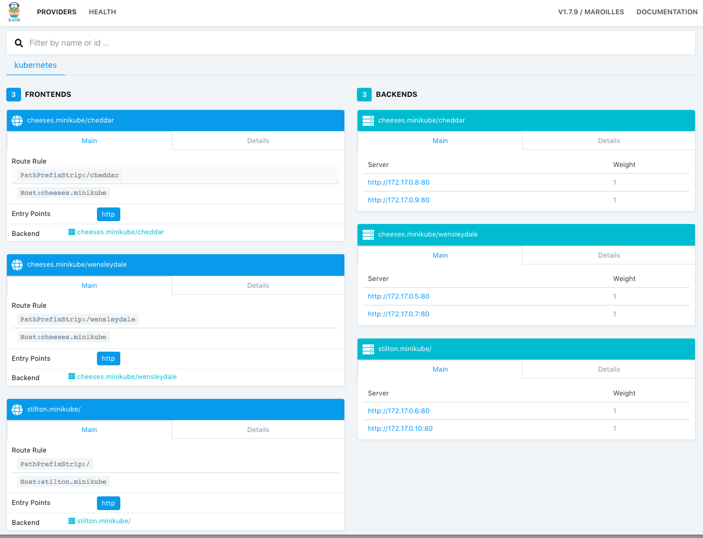

Kubernetes使用Traefik反向代理
1. Traefik
Traefik是一个云原生边界网关，可以实现http反向代理和负载均衡，并且可以作为k8s集群的Ingress Controller，结合Ingress实现k8s的服务注册和路由等功能。
2. 反向代理实践(Deployment模式)
2.1. 准备工作
启动k8s: mac下载桌面版docker，打开
Enable Kubernetes即可启动
- 启动MiniKube:
minikube start
2.2. 运行Traefik
- 下载github代码:
git clone https://github.com/containous/traefik - 进入
traefik/examples/k8s目录 deployment模式部署，创建对外服务：
kubectl create -f traefik-deployment.yaml- 加载资源:
kubectl apply -f traefik-deployment.yaml - 去除资源：
kubectl delete -f traefik-deployment.yaml
kind: Service apiVersion: v1 metadata: name: traefik-ingress-service namespace: kube-system spec: selector: k8s-app: traefik-ingress-lb ports: - protocol: TCP port: 80 nodePort: 32044 name: web - protocol: TCP port: 8080 nodePort: 30423 name: admin type: NodePort默认
type: NodePort会随机指定一个对外服务端口，若需要设定指定的端口，要在ports里配置实际的nodePort- 加载资源:
kubectl get pods -n kube-system可以看到trafik-ingress-controller已启动NAME READY STATUS RESTARTS AGE coredns-86c58d9df4-cffc8 1/1 Running 0 8h coredns-86c58d9df4-n5dsv 1/1 Running 0 8h etcd-minikube 1/1 Running 0 7h kube-addon-manager-minikube 1/1 Running 0 7h kube-apiserver-minikube 1/1 Running 0 7h kube-controller-manager-minikube 1/1 Running 0 7h kube-proxy-ltkl5 1/1 Running 0 8h kube-scheduler-minikube 1/1 Running 1 7h storage-provisioner 1/1 Running 0 8h traefik-ingress-controller-8c8b85bbc-9kn5p 1/1 Running 0 11mkubectl get services -n kube-system可以看到服务启动的ip和端口NAME TYPE CLUSTER-IP EXTERNAL-IP PORT(S) AGE kube-dns ClusterIP 10.96.0.10 <none> 53/UDP,53/TCP 7h traefik-ingress-service NodePort 10.98.51.165 <none> 80:32044/TCP,8080:30423/TCP 11m- 访问
$(minikube ip):32044可以看到当前对外端口返回的页面 - 访问
$(minikube ip):30423可以看到当前Traefik的dashboard
- 访问
2.3. 配置服务路由
启动后端服务
kubectl apply -f cheese-deployments.yaml kubectl apply -f cheese-services.yamlkubectl get services可以看到，启动的TYPE都是ClusterIP，集群内部服务，不对外暴露端口NAME TYPE CLUSTER-IP EXTERNAL-IP PORT(S) AGE cheddar ClusterIP 10.98.97.163 <none> 80/TCP 17s kubernetes ClusterIP 10.96.0.1 <none> 443/TCP 7h stilton ClusterIP 10.108.91.83 <none> 80/TCP 17s wensleydale ClusterIP 10.110.187.225 <none> 80/TCP 17s通过Ingress建立路由规则：
kubectl apply -f cheeses-ingress.yaml，配置如下：apiVersion: extensions/v1beta1 kind: Ingress metadata: name: cheeses annotations: traefik.frontend.rule.type: PathPrefixStrip spec: rules: - host: stilton.minikube http: paths: - path: / backend: serviceName: stilton servicePort: http - host: cheeses.minikube http: paths: - path: /cheddar backend: serviceName: cheddar servicePort: http - path: /wensleydale backend: serviceName: wensleydale servicePort: httptraefik.frontend.rule.type: PathPrefixStrip表示使用路由前缀匹配，且转发到后端前会将匹配到的前缀去掉(strip)；因此当你访问/cheddar/call时候，转发到后端的请求中的path会变成/call；如果只需要做前缀匹配，可以使用PathPrefix- 目前
traefik.ingress.kubernetes.io/rule-type支持Path, PathPrefix, PathStrip, PathPrefixStrip这五种规则 - Traefik的路由规则支持正则匹配，格式为
$param:$pattern，若:$pattern为空，则采取通配符匹配；如/cheddar/{name}/{id:[0-9]+}，匹配/cheddar/a/123等。Traefik采用golang的正则规则 PathPrefixStrip不支持去除带有正则表达式的路径
kubectl describe ingress cheeses查看 IngressName: cheeses Namespace: default Address: Default backend: default-http-backend:80 (<none>) Rules: Host Path Backends ---- ---- -------- stilton.minikube / stilton:http (<none>) cheeses.minikube /cheddar cheddar:http (<none>) /wensleydale wensleydale:http (<none>) Annotations: kubectl.kubernetes.io/last-applied-configuration: {"apiVersion":"extensions/v1beta1","kind":"Ingress","metadata":{"annotations":{"traefik.frontend.rule.type":"PathPrefixStrip"},"name":"cheeses","namespace":"default"},"spec":{"rules":[{"host":"stilton.minikube","http":{"paths":[{"backend":{"serviceName":"stilton","servicePort":"http"},"path":"/"}]}},{"host":"cheeses.minikube","http":{"paths":[{"backend":{"serviceName":"cheddar","servicePort":"http"},"path":"/cheddar"},{"backend":{"serviceName":"wensleydale","servicePort":"http"},"path":"/wensleydale"}]}}]}} traefik.frontend.rule.type: PathPrefixStrip Events: <none>添加dns:
echo "$(minikube ip) cheeses.minikube stilton.minikube" | sudo tee -a /etc/hosts- 开启rbac，授权角色访问dashboard权限
kubectl apply -f traefik-rbac.yaml 访问
$(minikube ip):30423查看当前Traefik的dashboard
访问以下地址，可以看到根据路由规则返回了相应的服务页面；访问其他地址会返回
404 not foundhttp://stilton.minikube:32044/http://cheeses.minikube:32044/cheddarhttp://cheeses.minikube:32044/wensleydale
3. 通过ConfigMap对Traefik网关进行配置
创建ConfigMap，在k8s上注册Traefik配置资源
$ cat traefik-config.yaml apiVersion: v1 kind: ConfigMap metadata: name: traefik-config namespace: kube-system data: traefik.toml: | defaultEntryPoints = ["http"] [entryPoints] [entryPoints.http] address = ":80" [accessLog] filePath = "/logs/traefik.access.log" format = "json" $ kubectl apply -f traefik-config.yaml这里我们做一个简单的配置，设置Traefik的accesslog以json格式打印到
/logs/traefik.access.log路径下。更多丰富的Traefik配置选项可以查阅官方文档：Traefik Configuration
让Traefik Deployment引用ConfigMap资源
$ cat traefik-deployment.yaml --- apiVersion: v1 kind: ServiceAccount metadata: name: traefik-ingress-controller namespace: kube-system --- kind: Deployment apiVersion: extensions/v1beta1 metadata: name: traefik-ingress-controller namespace: kube-system labels: k8s-app: traefik-ingress-lb spec: replicas: 2 selector: matchLabels: k8s-app: traefik-ingress-lb template: metadata: labels: k8s-app: traefik-ingress-lb name: traefik-ingress-lb spec: serviceAccountName: traefik-ingress-controller terminationGracePeriodSeconds: 60 containers: - image: traefik name: traefik-ingress-lb ports: - name: http containerPort: 80 - name: admin containerPort: 8080 args: - --configfile=/config/traefik.toml - --api - --kubernetes - --logLevel=INFO volumeMounts: - mountPath: /config name: traefik-config - mountPath: /logs name: traefik-log volumes: - name: traefik-config configMap: name: traefik-config - name: traefik-log hostPath: path: /tmp/log/traefik --- kind: Service apiVersion: v1 metadata: name: traefik-ingress-service namespace: kube-system spec: selector: k8s-app: traefik-ingress-lb ports: - protocol: TCP port: 80 nodePort: 30036 name: web - protocol: TCP port: 8080 nodePort: 30037 name: admin type: NodePort $ kubectl apply -f traefik-deployment.yaml- 这里我们通过
volumeMounts将之前注册的ConfigMap资源traefik-config挂载到容器的/config目录下；并且制定启动Traefik的参数args: --configfile=/config/traefik.toml，使用traefik.toml的配置 - 通过
volumeMounts将容器的日志挂载到宿主机的/tmp/log/traefik目录下
- 这里我们通过
启动Traefik后，会发现宿主机的
/tmp/log/traefik目录下出现了traefik.access.log访问
localhost:30036，即可在traefik.access.log中看到请求日志$ tail -f /tmp/log/traefik/traefik.access.log {"BackendAddr":"","BackendName":"Traefik","BackendURL":{"Scheme":"","Opaque":"","User":null,"Host":"","Path":"/","RawPath":"","ForceQuery":false,"RawQuery":"","Fragment":""},"ClientAddr":"192.168.65.3:54144","ClientHost":"192.168.65.3","ClientPort":"54144","ClientUsername":"-","DownstreamContentSize":19,"DownstreamStatus":404,"DownstreamStatusLine":"404 Not Found","Duration":264044,"FrontendName":"backend not found","OriginContentSize":19,"OriginDuration":20445,"OriginStatus":404,"OriginStatusLine":"404 Not Found","Overhead":243599,"RequestAddr":"localhost:30036","RequestContentSize":0,"RequestCount":98,"RequestHost":"localhost","RequestLine":"GET / HTTP/1.1","RequestMethod":"GET","RequestPath":"/","RequestPort":"30036","RequestProtocol":"HTTP/1.1","RetryAttempts":0,"StartLocal":"2019-04-17T10:19:18.315341342Z","StartUTC":"2019-04-17T10:19:18.315341342Z","downstream_Content-Type":"text/plain; charset=utf-8","downstream_X-Content-Type-Options":"nosniff","level":"info","msg":"","origin_Content-Type":"text/plain; charset=utf-8","origin_X-Content-Type-Options":"nosniff","request_Accept":"*/*","request_User-Agent":"curl/7.51.0","time":"2019-04-17T10:19:18Z"}
4. 配置服务优先级
Traefik-Ingress路由默认采用最长路径匹配原则，比如以下两个Ingress都使用前缀匹配
$ cat cheddar-ingress.yaml
apiVersion: extensions/v1beta1
kind: Ingress
metadata:
name: cheddar
annotations:
kubernetes.io/ingress.class: traefik
traefik.frontend.rule.type: PathPrefixStrip
spec:
rules:
- host: cheeses.minikube
http:
paths:
- path: /cheddar
backend:
serviceName: cheddar
servicePort: http
$ cat wensleydale-ingress.yaml
apiVersion: extensions/v1beta1
kind: Ingress
metadata:
name: wensleydale
annotations:
kubernetes.io/ingress.class: traefik
traefik.frontend.rule.type: PathPrefixStrip
spec:
rules:
- host: cheeses.minikube
http:
paths:
- path: /cheddar/wensleydale
backend:
serviceName: wensleydale
servicePort: http
我们载入这两个Ingress：kubectl apply -f cheddar-ingress.yaml，kubectl apply -f wensleydale-ingress.yaml，当你访问cheeses.minikube:32044/cheddar/wensleydale/xxx时，请求会被分发到wensleydale服务上。
我们可以通过配置指定路由优先级，使用traefik.ingress.kubernetes.io/priority，对应的值越大，优先级越高。
$ cat cheddar-ingress.yaml
apiVersion: extensions/v1beta1
kind: Ingress
metadata:
name: cheddar
annotations:
kubernetes.io/ingress.class: traefik
traefik.frontend.rule.type: PathPrefixStrip
traefik.ingress.kubernetes.io/priority: "2"
spec:
rules:
- host: cheeses.minikube
http:
paths:
- path: /cheddar
backend:
serviceName: cheddar
servicePort: http
$ cat wensleydale-ingress.yaml
apiVersion: extensions/v1beta1
kind: Ingress
metadata:
name: wensleydale
annotations:
kubernetes.io/ingress.class: traefik
traefik.frontend.rule.type: PathPrefixStrip
traefik.ingress.kubernetes.io/priority: "1"
spec:
rules:
- host: cheeses.minikube
http:
paths:
- path: /cheddar/wensleydale
backend:
serviceName: wensleydale
servicePort: http
此时访问cheeses.minikube:32044/cheddar/wensleydale/xxx时，请求会被分发到cheddar服务上。
默认不设置
traefik.ingress.kubernetes.io/priority时的路由优先级最高；所以建议是都手动设置一个默认值，以免设置了优先级的路由被未设置优先级的路由覆盖
5. 负载均衡
Traefik可以做到细粒度的负载均衡。
比如我们现在有两个服务，cheddar和wensleydale，我们希望同一个入口75%的流量导向cheddar，25%的流量导向wensleydale，那么可以做以下配置
$ cat cheeses-ingress.yaml
apiVersion: extensions/v1beta1
kind: Ingress
metadata:
name: cheeses
annotations:
kubernetes.io/ingress.class: traefik
traefik.frontend.rule.type: PathPrefixStrip
traefik.ingress.kubernetes.io/service-weights: |
cheddar: 75%
wensleydale: 25%
spec:
rules:
- host: cheeses.minikube
http:
paths:
- path: /
backend:
serviceName: cheddar
servicePort: http
- path: /
backend:
serviceName: wensleydale
servicePort: http
$ kubectl apply -f cheeses-ingress.yaml
接下来批量访问cheeses.minikube:32044/，就会发现流量按照比例被导入到两个服务上去了
Traefik也支持默认自动配置。比如上面这个例子，如果你只配置了wensleydale: 25%，即便不配置cheddar: 75%，Traefik也会把余下75%的流量自动导入到cheddar上去。
负载均衡的两个服务中，任意一个服务未启用，该规则都不会生效。如
cheddar服务关闭的话，访问cheeses.minikube:32044/的请求就会全部返回404 Not Found
6. 灰度发布
6.1. 应用部署
创建本地镜像，一个简单的http服务器
注意，如果要使用本地镜像的话，不能使用minikube虚拟机，否则会由于虚拟机环境没有镜像而导致拉取镜像失败
$ cat demo.go package main import ( "fmt" "io" "log" "net/http" "github.com/gorilla/mux" ) type my404Handler struct{} func (h *my404Handler) ServeHTTP(w http.ResponseWriter, r *http.Request) { io.WriteString(w, "gm-v1: 404 not Found!\n") } // DemoServer the web server func DemoServer(w http.ResponseWriter, r *http.Request) { gameid, _ := mux.Vars(r)["gameid"] io.WriteString(w, fmt.Sprintf("gm-v1: game %v\n", gameid)) } func main() { router := mux.NewRouter() router.HandleFunc("/{gameid}/gm/call", DemoServer) router.NotFoundHandler = &my404Handler{} log.Fatal(http.ListenAndServe(":8080", router)) } $ cat Dockerfile FROM golang:1.9.6 COPY ./demo.go /go/src/ WORKDIR /go/src RUN go get github.com/gorilla/mux CMD ["go", "run", "demo.go"] $ docker build -t demo-gm:v1 .- 我们将上述镜像文件中的v1改成v2，再创建一个
demo-gm:v2镜像
- 我们将上述镜像文件中的v1改成v2，再创建一个
使用Deployment模式部署应用镜像，对外提供服务
$ cat gm-v1.yaml apiVersion: extensions/v1beta1 kind: Deployment metadata: name: gm-v1 labels: app: gm-v1 spec: replicas: 2 selector: matchLabels: app: gm-v1 template: metadata: labels: app: gm-v1 spec: containers: - name: gm-v1 image: demo-gm:v1 ports: - containerPort: 8080 --- apiVersion: v1 kind: Service metadata: name: gm-v1 spec: ports: - name: http port: 80 targetPort: 8080 selector: app: gm-v1 $ kubectl apply -f gm-v1.yaml使用Ingress注册服务
$ cat gm-v1-ingress.yaml apiVersion: extensions/v1beta1 kind: Ingress metadata: name: gm-v1 annotations: kubernetes.io/ingress.class: traefik traefik.frontend.rule.type: PathPrefix spec: rules: - host: localhost http: paths: - path: /dm0/gm backend: serviceName: gm-v1 servicePort: http $ kubectl apply -f gm-v1-ingress.yaml启动traefik
$ cat traefik-deployment.yaml --- apiVersion: v1 kind: ServiceAccount metadata: name: traefik-ingress-controller namespace: kube-system --- kind: Deployment apiVersion: extensions/v1beta1 metadata: name: traefik-ingress-controller namespace: kube-system labels: k8s-app: traefik-ingress-lb spec: replicas: 2 selector: matchLabels: k8s-app: traefik-ingress-lb template: metadata: labels: k8s-app: traefik-ingress-lb name: traefik-ingress-lb spec: serviceAccountName: traefik-ingress-controller terminationGracePeriodSeconds: 60 containers: - image: traefik name: traefik-ingress-lb ports: - name: http containerPort: 80 - name: admin containerPort: 8080 args: - --api - --kubernetes - --logLevel=INFO --- kind: Service apiVersion: v1 metadata: name: traefik-ingress-service namespace: kube-system spec: selector: k8s-app: traefik-ingress-lb ports: - protocol: TCP port: 80 nodePort: 30036 name: web - protocol: TCP port: 8080 nodePort: 30037 name: admin type: NodePort $ kubectl apply -f traefik-deployment.yaml访问
gm-v1服务$ curl 'localhost:30036/dm0/gm/call' gm-v1: game dm0 $ curl 'localhost:30036/dm0/gm/test gm-v1: 404 not Found!
6.2. 应用升级
6.2.1. 部署gm-v2服务
$ cat gm-v2.yaml
apiVersion: extensions/v1beta1
kind: Deployment
metadata:
name: gm-v2
labels:
app: gm-v2
spec:
replicas: 2
selector:
matchLabels:
app: gm-v2
template:
metadata:
labels:
app: gm-v2
spec:
containers:
- name: gm-v2
image: demo-gm:v2
ports:
- containerPort: 8080
---
apiVersion: v1
kind: Service
metadata:
name: gm-v2
spec:
ports:
- name: http
port: 80
targetPort: 8080
selector:
app: gm-v2
$ kubectl apply -f gm-v2.yaml
6.2.2. "50%"灰度
使用Ingress注册
gm-v2服务$ cat gm-v2-ingress.yaml apiVersion: extensions/v1beta1 kind: Ingress metadata: name: gm-v2 annotations: kubernetes.io/ingress.class: traefik traefik.frontend.rule.type: PathPrefix spec: rules: - host: localhost http: paths: - path: /dm0/gm backend: serviceName: gm-v2 servicePort: http $ kubectl apply -f gm-v2-ingress.yaml通过
kubectl get ingress可以看到，此时gm-v1和gm-v2是并存的NAME HOSTS ADDRESS PORTS AGE gm-v1 localhost 80 4h gm-v2 localhost 80 3h通过简单的程序20次访问服务可以发现，此时“50%”的流量被分发到了
gm-v2gm-v2: game dm0 gm-v2: game dm0 gm-v1: game dm0 gm-v1: game dm0 gm-v2: game dm0 gm-v2: game dm0 gm-v1: game dm0 gm-v1: game dm0 gm-v2: game dm0 gm-v2: game dm0 gm-v1: game dm0 gm-v1: game dm0 gm-v2: game dm0 gm-v2: game dm0 gm-v1: game dm0 gm-v1: game dm0 gm-v2: game dm0 gm-v2: game dm0 gm-v1: game dm0 gm-v1: game dm0 map[unknown:0 v1:10 v2:10]之所以给这“50%”加个引号是因为，实际上，此时的流量会均匀地分发给gm-v1和gm-v2所有的pod，如果gm-v1启动了2个pod，gm-v2启动了4个pod，那么分发到gm-v1和gm-v2的流量为
1:2通过
kubectl delete ingress gm-v1，删除gm-v1的路由然后再次访问服务，可以发现流量全部到分发到了
gm-v2gm-v2: game dm0 gm-v2: game dm0 gm-v2: game dm0 gm-v2: game dm0 gm-v2: game dm0 gm-v2: game dm0 gm-v2: game dm0 gm-v2: game dm0 gm-v2: game dm0 gm-v2: game dm0 gm-v2: game dm0 gm-v2: game dm0 gm-v2: game dm0 gm-v2: game dm0 gm-v2: game dm0 gm-v2: game dm0 gm-v2: game dm0 gm-v2: game dm0 gm-v2: game dm0 gm-v2: game dm0 map[v1:0 v2:20 unknown:0]
6.2.3. 精准灰度
通过Ingress注册/dm0/gm访问gm-v1服务，此时流量全部转发到gm-v1
$ cat gm-v1-ingress.yaml apiVersion: extensions/v1beta1 kind: Ingress metadata: name: dm0-gm annotations: kubernetes.io/ingress.class: traefik traefik.frontend.rule.type: PathPrefix spec: rules: - host: localhost http: paths: - path: /dm0/gm backend: serviceName: gm-v1 servicePort: http $ kubectl apply -f gm-v1-ingress.yaml使用同样的name(dm0-gm)，注册灰度路由；此时由于Ingress name相同，会覆盖之前的路由
$ cat gm-v2-ingress.yaml apiVersion: extensions/v1beta1 kind: Ingress metadata: name: dm0-gm annotations: kubernetes.io/ingress.class: traefik traefik.frontend.rule.type: PathPrefix traefik.ingress.kubernetes.io/service-weights: | gm-v1: 75% gm-v2: 25% spec: rules: - host: localhost http: paths: - path: /dm0/gm backend: serviceName: gm-v1 servicePort: http - path: /dm0/gm backend: serviceName: gm-v2 servicePort: http $ kubectl apply -f gm-v2-ingress.yaml此时访问服务会发现，25%的流量被转发到了
gm-v2gm-v1: game dm0 gm-v1: game dm0 gm-v1: game dm0 gm-v1: game dm0 gm-v2: game dm0 gm-v1: game dm0 gm-v1: game dm0 gm-v2: game dm0 gm-v1: game dm0 gm-v1: game dm0 gm-v1: game dm0 gm-v1: game dm0 gm-v2: game dm0 gm-v1: game dm0 gm-v1: game dm0 gm-v2: game dm0 gm-v1: game dm0 gm-v1: game dm0 gm-v1: game dm0 gm-v1: game dm0 map[v2:4 unknown:0 v1:16]更新Ingress:
dm0-gm$ cat gm-v2-ingress.yaml apiVersion: extensions/v1beta1 kind: Ingress metadata: name: dm0-gm annotations: kubernetes.io/ingress.class: traefik traefik.frontend.rule.type: PathPrefix spec: rules: - host: localhost http: paths: - path: /dm0/gm backend: serviceName: gm-v2 servicePort: http $ kubectl apply -f gm-v2-ingress.yaml此时访问服务会发现，所有流量都被转发到了
gm-v2gm-v2: game dm0 gm-v2: game dm0 gm-v2: game dm0 gm-v2: game dm0 gm-v2: game dm0 gm-v2: game dm0 gm-v2: game dm0 gm-v2: game dm0 gm-v2: game dm0 gm-v2: game dm0 gm-v2: game dm0 gm-v2: game dm0 gm-v2: game dm0 gm-v2: game dm0 gm-v2: game dm0 gm-v2: game dm0 gm-v2: game dm0 gm-v2: game dm0 gm-v2: game dm0 gm-v2: game dm0 map[v1:0 v2:20 unknown:0]
7. IP限制
Traefik支持对指定的路由做ip白名单限制
$ cat gm-v1-ingress.yaml
kind: Ingress
metadata:
name: dm0-gm
annotations:
kubernetes.io/ingress.class: traefik
traefik.frontend.rule.type: PathPrefix
spec:
rules:
- host: localhost
http:
paths:
- path: /dm0/gm
backend:
serviceName: gm-v1
servicePort: http
---
apiVersion: extensions/v1beta1
kind: Ingress
metadata:
name: dm1-gm
annotations:
kubernetes.io/ingress.class: traefik
traefik.frontend.rule.type: PathPrefix
traefik.ingress.kubernetes.io/whitelist-source-range: "127.0.0.1"
spec:
rules:
- host: localhost
http:
paths:
- path: /dm1/gm
backend:
serviceName: gm-v1
servicePort: http
$ kubectl apply -f gm-v1-ingress.yaml
- 此时，访问
/dm1/gm的来源ip若不是127.0.0.1，反向代理会返回403 Forbidden；访问dm0/gm的不受ip限制 - 也可以指定
ingress.kubernetes.io/whitelist-x-forwarded-for: "true"，使用HTTP头部的X-Forwarded-For字段的ip做校验 - 支持多ip和通配符，如
traefik.ingress.kubernetes.io/whitelist-source-range: "1.2.3.0/24, fe80::/16"
8. 定制Header
定制请求头
$ cat gm-v1-ingress.yaml apiVersion: extensions/v1beta1 kind: Ingress metadata: name: dm2-gm annotations: kubernetes.io/ingress.class: traefik traefik.frontend.rule.type: PathPrefix ingress.kubernetes.io/custom-request-headers: "X-Custom-Id: test" spec: rules: - host: localhost http: paths: - path: /dm2/gm backend: serviceName: gm-v1 servicePort: http $ kubectl apply -f gm-v1-ingress.yaml- 后端收到的请求中会包含请求头
X-Custom-Id - 可以通过
"Header1: Value1||Header2: Value2||...的方式设定多个请求头 经过traefik反向代理转发的请求会自动带上以下头部
X-Forwarded-HostX-Forwarded-PortX-Forwarded-ServerX-Forwarded-ForX-Real-IpX-Forwarded-ProtoUser-AgentAccept-Encoding
- 后端收到的请求中会包含请求头
定制返回头的方法和请求头一样，只是annotations换成了
ingress.kubernetes.io/custom-response-headers
参考链接